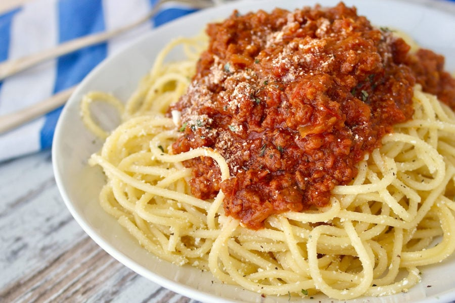

Spaghetti

Description
Ingredients
- 2 jars tomato sauce
- 2 large white onions
- 2 large red bell peppers
- 16 oz baby bella mushrooms
- 1 tablespoon olive oil
- 1 tablespoon butter
- 1-2 pounds ground beef
- Parmesan cheese
- Minced garlic
- Soy sauce
- Salt
- Pepper
- Garlic powder
- Thyme
- Desired type and amount of noodles (spaghetti, angel hair, etc)
Steps
Preparation
- Dice onions into small cubes
- Chop red bell peppers into thin strips
- Season ground beef with salt, pepper, thyme, and garlic powder
Making the Sauce
- Heat olive oil and butter in a sauce pan on medium-high heat
- Add diced onions in a cook for 3 minutes or until translucent
- Add in two tablespoons of minced garlic and cook for 45 seconds
- Add in 16 oz baby bella mushrooms
- Add in two tablespoons of soy sauce
- Cook for 8 minutes or until mushrooms are tender
- Add in ground beef, mix thoroughly, and cook for until ground beef is browned throughout
- Add in both jars of tomato sauce
- Bring to a boil then reduce heat to low and simmer until serving
Cooking the Noodles
- Fill a medium pot with 2 quarts of water
- Generously salt water to prevent sticking and add flavor
- Add 1 tablespoon of olive oil to water
- Bring water to a vigorous boil
- Add noodles and cook to package specifications
Serving
- Add as many noodles as desired to whichever dish you desire (bowl, plate, etc.)
- Add a liberal amount of sauce to the noodles
- Top with desired amount of parmesan cheese
RETURN